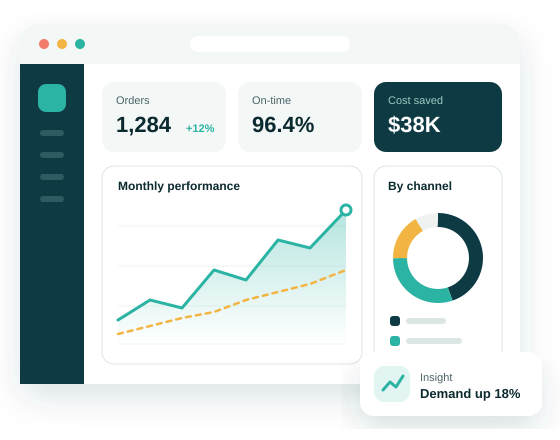
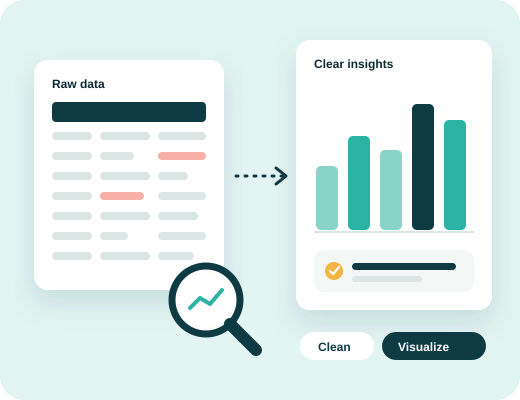
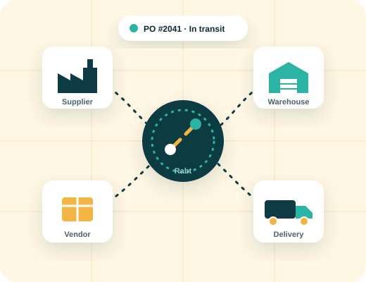
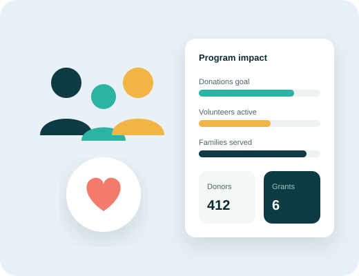

⚙️
Operations & workflow automation
Replace spreadsheets and manual steps with automated approvals, task tracking and team workflows.
SaaS & technology solutions
Rabt builds cloud software and delivers data analysis that helps companies, businesses and nonprofit organizations run their operations, make sense of their data and grow, without the complexity.

Cloud software for operations, procurement, reporting and nonprofit management, by monthly subscription.
02We clean, analyze and visualize your data, then turn it into decisions your team can act on.
03Integrations and tailored tools built around the way your organization already works.
Solutions
Ready-to-use platforms and custom builds, delivered as secure cloud subscriptions.
Replace spreadsheets and manual steps with automated approvals, task tracking and team workflows.
Manage vendors, purchase orders, shipments and inventory from one connected platform.
Bring your data together into clear, real-time dashboards that leaders can act on.
Track emissions and sustainability metrics, including Scope 3, and prepare reports with confidence.
Organize donors, volunteers, programs and grants so your team can focus on the mission.
Connect the tools you already use, or build a solution designed for your exact needs.

Data analysis services
Most organizations already have the data they need, spread across spreadsheets, systems and reports. Our analysts bring it together, clean it, and show you what it means, so you can act with confidence.
A focused project to answer a specific question, delivered as a report and presentation.
We design and build a live dashboard connected to your data, then train your team to use it.
A monthly plan with regular reporting, check-ins and analysis on demand.

Supply chain & procurement
Supply chains run on many moving parts. Rabt connects them, from the first purchase request to final delivery, so nothing falls through the cracks.

For nonprofits
Nonprofit teams do a lot with small budgets. Our tools and nonprofit pricing help you organize your work and show your impact to donors and funders.
Who we serve
Scalable platforms that connect departments, locations and partners.
Affordable tools that help growing businesses save time and cut costs.
Simple, budget-friendly software that stretches every dollar further.
How we work
We learn your goals, processes and pain points.
We map the right solution and agree on scope.
We configure, integrate and train your team.
We stay with you to improve and scale.
About Rabt
Technology should make work easier, not harder. Yet many organizations end up with software their teams don’t use and data nobody has time to understand. Rabt exists to close that gap.
We are a SaaS and data analysis company based in Tempe, Arizona. We work alongside companies, growing businesses and nonprofit organizations to learn how their people really work, then build the tools and insights that fit, not the other way around.
To help every organization, whatever its size or budget, use technology and data to serve its people better.
Software as a Service. Instead of buying and installing software, you use it online through a monthly subscription. We handle hosting, updates and security.
Yes. Data analysis is a standalone service. You can start with a one-time project, a dashboard build, or an ongoing monthly plan, with no software subscription required.
Whatever you already have: spreadsheets, exports from your current systems, or survey results. We help you figure out what is useful during the free consultation.
Yes. We only use your data for the work you hire us for, limit who can access it, and can sign a confidentiality agreement before any data is shared.
Yes. Nonprofit organizations receive discounted pricing on our software and data services. Contact us to learn more.
Most data projects start within a week of the first consultation. Software timelines depend on how much setup and integration you need; we agree on a schedule before work begins.
Contact
Tell us about your organization and we’ll get back to you to schedule a free consultation.